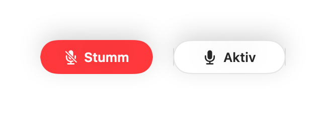
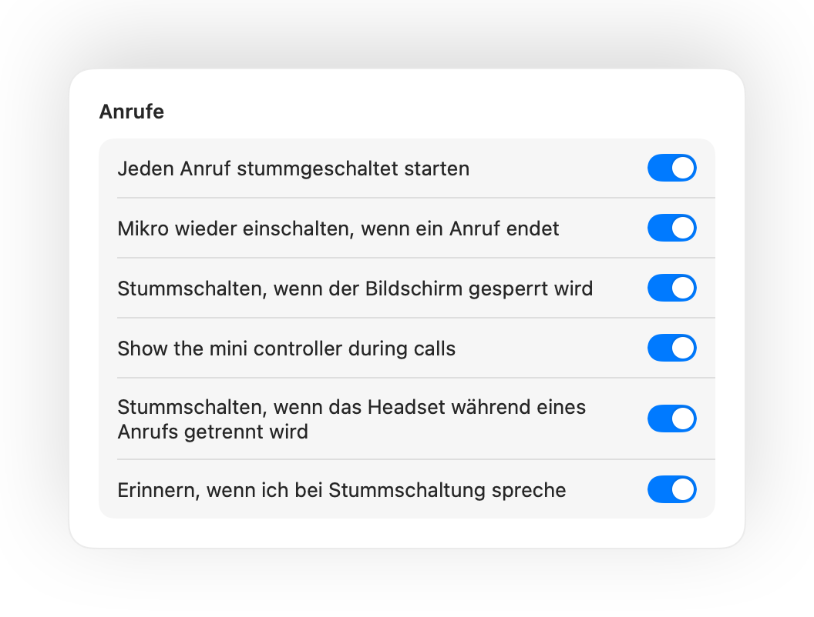
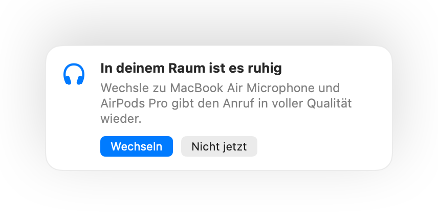
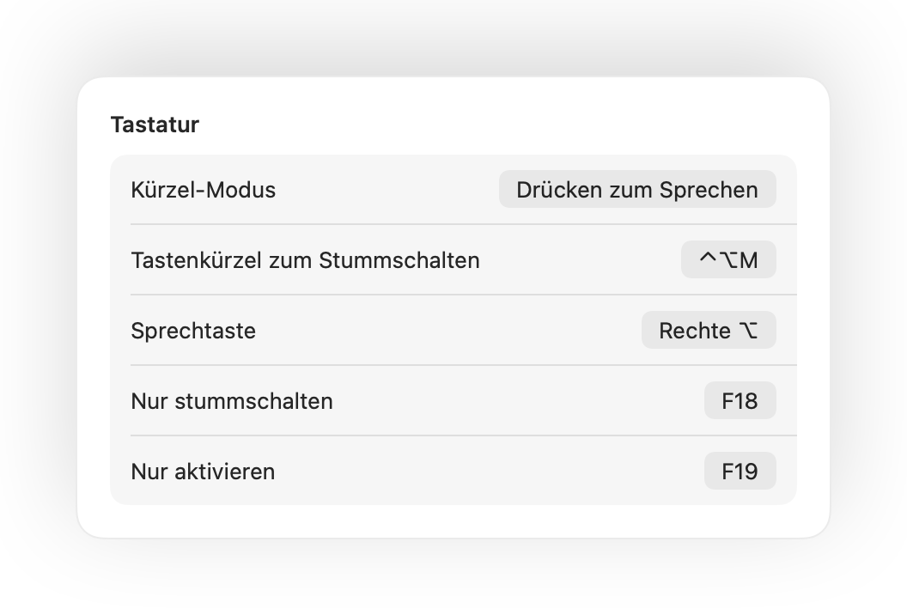

Drücke deine AirPods.
Drücke während jedes Anrufs auf den Stiel. Muffle schaltet das Mikrofon selbst aus, sodass Meet, Zoom, Teams und jede andere App nichts hören.

Muffle für Mac
Drücke deine AirPods oder ein Tastenkürzel. Muffle schaltet das Mikrofon selbst aus, damit Google Meet, Zoom, Teams, Slack und jede andere App Stille hören.
3 Tage kostenlos testen. Danach einmalige Zahlung, kein Abo. Für macOS 14 Sonoma und neuer.

Muffle schaltet das Mikrofon auf Hardware-Ebene stumm. Es spielt also keine Rolle, welche App, welcher Browser oder welcher Tab aktiv ist.
Drücke während jedes Anrufs auf den Stiel. Muffle schaltet das Mikrofon selbst aus, sodass Meet, Zoom, Teams und jede andere App nichts hören.
Ein Tastenkürzel für jede App, selbst wenn der Anruf in einem Hintergrund-Tab liegt. Halte es zum Sprechen gedrückt oder wechsle zu „Drücken zum Sprechen“.
Muffle erkennt deine Stimme und erinnert dich rechtzeitig, bevor du deine ganze Idee niemandem erklärst.

Ein kleiner schwebender Button zeigt deinen Mikrofonstatus und schaltet mit einem Klick stumm. Grün ist aktiv, Rot ist stummgeschaltet.

Wenn du bei Stummschaltung sprichst, erinnert dich Muffle sofort daran, bevor du deinen ganzen Gedanken ins Leere sprichst.
Drücke während eines Anrufs einmal auf den Stiel, um stummzuschalten, und noch einmal, um es aufzuheben. Funktioniert auch in Chrome, wo Google Meet und andere Webanrufe den AirPods-Druck ignorieren.
Control-Wahltaste-M schaltet dich überall stumm, selbst wenn der Anruf in einem Hintergrund-Tab läuft. Halte die Tasten für Push-to-Talk einfach gedrückt und lass los, um wieder stumm zu sein.
Ein kleiner schwebender Button zeigt den Mikrofonstatus bei Anrufen. Klicke darauf, um stumm- oder freizuschalten.
Jeden Anruf stummgeschaltet starten, das Mikrofon nach Gesprächsende wieder einschalten und sofort stummschalten, wenn du deinen Mac sperrst.

Kurz aktiviert, um etwas zu sagen? Wenn du danach für die gewählte Zeit still bist, schaltet Muffle dich wieder stumm. Nur deine Stimme zählt, kein Tippen oder Hintergrundgeräusche.
Chrome, Zoom und Teams verstellen deinen Mikrofonpegel oft eigenmächtig. Fixiere ihn und Muffle setzt ihn sofort zurück.
Mit AirPods in einem ruhigen Raum schlägt Muffle das Mikrofon deines Mac vor, damit die AirPods den Anruf in voller Qualität wiedergeben. Wenn es laut wird, schlägt es das AirPods-Mikrofon vor.

Wähle, wie dein Tastenkürzel funktioniert: Tippen zum Umschalten, Halten zum Sprechen oder Halten zum Stummschalten beim Husten. Lege separate Tasten zum Stumm- und Aktivschalten fest, oder halte eine Taste wie die Rechte ⌥ oder eine zusätzliche Maustaste gedrückt.

Wenn dein Kopfhörer mitten im Meeting die Verbindung verliert, schaltet Muffle sofort stumm, bevor das Mac-Mikrofon übernimmt und den ganzen Raum überträgt.
Stummschalten über die App Kurzbefehle, Siri, ein Stream Deck, Raycast oder eine Taste im Kontrollzentrum.
Ein grünes oder rotes Leuchten um den Bildschirm, ein farbiges Menüleistensymbol, ein schwebender Button und ein Ton, den du für jedes Mikrofon ausschalten kannst. Schalte einfach ein, was dir gefällt.
Muffle zeichnet niemals Audio auf, speichert es nicht und sendet es nicht. Die App schaltet nur dein Mikrofon ein oder aus und liest die Lautstärke ab. Keine Benutzerkonten, keine Analyse, kein Tracking.
Installiere Muffle aus dem Mac App Store und erlaube den Mikrofonzugriff.
Tritt wie gewohnt einem Anruf in einer beliebigen App bei.
Drücke deine AirPods, drücke Control-Wahltaste-M oder klicke auf das Menüleistensymbol zum Stummschalten.
Ja. Chrome leitet den AirPods-Druck nicht an Webanrufe weiter. Muffle nimmt den Tastendruck entgegen und schaltet das Mikrofon selbst stumm. Das gilt für jeden Anruf in einem Browser-Tab.
Deine Konferenz-App zeigt das Mikrofon eventuell noch als aktiv an, weil Muffle die Hardware ausschaltet statt des App-Buttons. Die anderen hören in jedem Fall Stille. Das Muffle-Symbol in der Menüleiste wird rot, wenn du stummgeschaltet bist.
AirPods Pro, AirPods 3 und neuer sowie AirPods Max, außerdem Beats-Modelle mit Anrufsteuerung. Das Tastenkürzel und die Menüleiste funktionieren mit jedem Mikrofon.
Ja. Muffle funktioniert mit jeder Mac-App, die das Mikrofon nutzt, egal ob Desktop-Programm oder Videoanruf im Browser.
Nein. Teste alle Funktionen 3 Tage kostenlos. Danach kannst du Muffle mit einem einmaligen Kauf dauerhaft freischalten.
macOS leitet den AirPods-Druck nur an Apps weiter, die das Mikrofon verwenden dürfen. Muffle hält daher während Anrufen eine stille Verbindung offen. Es wird nichts aufgezeichnet.
Muffle aktiviert dein Mikrofon beim Beenden automatisch wieder, damit du nie versehentlich stumm bleibst.
macOS 14 Sonoma und neuer. Für die Taste im Kontrollzentrum ist macOS 26 oder neuer erforderlich.
Ja. Wähle „Drücken zum Sprechen“ in den Einstellungen und halte dein Tastenkürzel zum Sprechen gedrückt. Du kannst auch eine einzelne Taste wie die Rechte ⌥ oder fn oder eine zusätzliche Maustaste gedrückt halten.
Wenn ein Anruf das AirPods-Mikrofon verwendet, wechseln die AirPods in den Anrufmodus, der Ton in geringerer Qualität wiedergibt. In einem ruhigen Raum schlägt Muffle stattdessen das Mikrofon deines Mac vor, damit die AirPods den Ton weiter in voller Qualität abspielen.
Nein. Muffle erkennt Sprache über Apples Audioanalyse direkt auf dem Gerät, sodass nur Sprechen zählt. Tippen, Klicks und Hintergrundgeräusche zählen nicht, und es wird nichts aufgezeichnet.
Kurze, praktische Antworten zum Stummschalten deines Mikrofons am Mac in jeder App.
Muffle kannst du 3 Tage kostenlos testen.